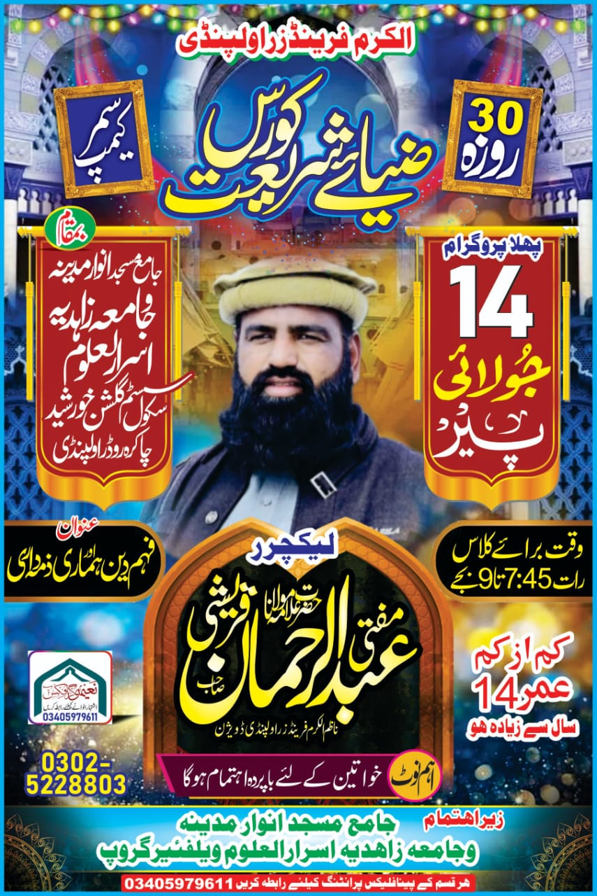
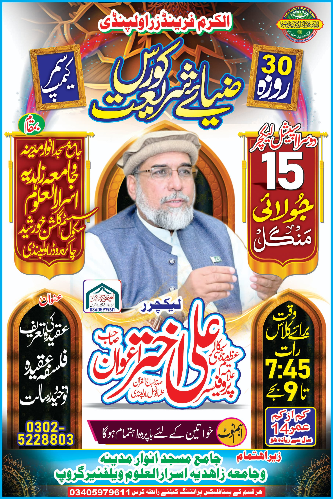
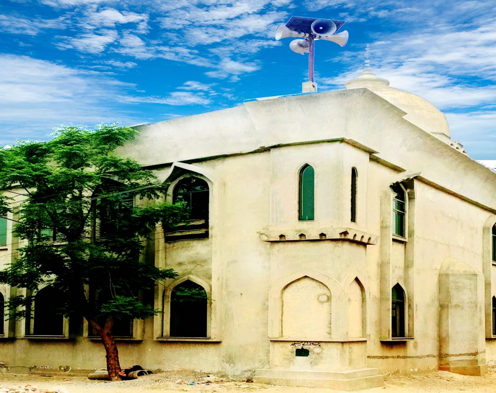
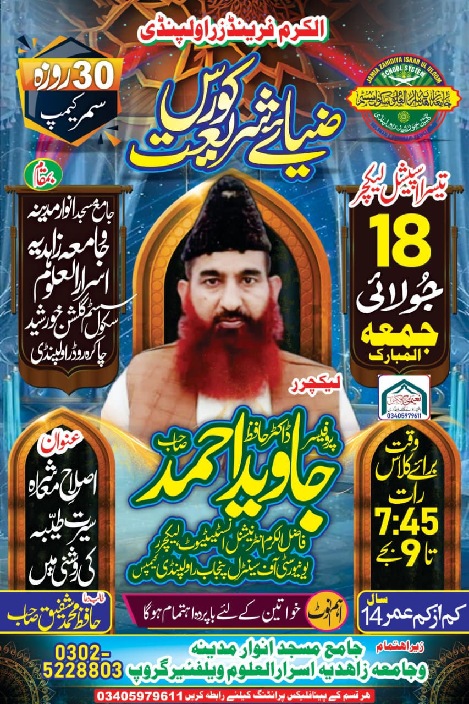

"کیا برابر ہو سکتے ہیں وہ جو جانتے ہیں اور وہ جو نہیں جانتے؟" (الزمر: 9)
💬 نبی ﷺ نے فرمایا:
"جس نے علمِ دین کی طلب میں سفر کیا، اللہ اس کے لیے جنت کا راستہ آسان کر دیتا ہے" (مسلم)
🕌 جامعہ زاہدیہ اسرار العلوم کا یہ کورس صرف سبق نہیں — بلکہ فکر و شعور کی بیداری، ایمان کی تازگی، اور عمل کی
تحریک ہے۔
🔥 ہم نے آغاز کیا ہے ایک تحریک کا!
🌙 ایسا سمر کیمپ جو علم، عمل، ادب، اخلاق، اور دین کے نور سے دل و دماغ کو منور کر دے۔
📚 کورس میں شامل:
✔ قرآن کریم کی تلاوت و تجوید
✔ احادیثِ مبارکہ کا فہم
✔ عقائد، فقہ، اور اسلامی آداب
✔ بچوں، خواتین اور نوجوانوں کے لیے آسان اور جامع سبق
✔ آن لائن ویڈیوز کے ذریعے ہر جگہ سے رسائی
🚨 اب وقت ہے! اپنے اور اپنے بچوں کے ایمان کو تازگی دینے کا، علم سے روشنی پھیلانے کا۔
🎯 صرف 30 دن — لیکن اثر پوری زندگی کا!
🔔 نیچے دی گئی ویڈیوز سے آغاز کریں اور اس مبارک سفر میں شامل ہوں۔
📘 ضیائے شریعت کورس - دن اول
📅 تاریخ:🌙 14 جولائی، بروز پیر
⏰ وقت:نمازِ مغرب کے فوراً بعد
📍 مقام:جامعہ زاہدیہ اسرارالعلوم
👤 مہمانِ خصوصی: شیخ مفتی عبدالرحمٰن قریشی صاحب
(فاضل الکرم انٹرنیشنل انسٹیٹیوٹ، ناظم الکرم فرینڈز، راولپنڈی ڈویژن)
📖 موضوع: 🌹 فہمِ دین اور ہماری ذمہ داری 🌹

📘 ضیائے شریعت کورس - دن دوم
📅 تاریخ:📆 15 جولائی 2025
⏰ وقت:07:45 تا 09:00 بجے رات
📍 مقام:جامعہ زاہدیہ اسرارُالعلوم، متصل جامع مسجد انوار مدینہ، گلشن خورشید، چاکرہ روڈ راولپنڈی
👤 مہمانِ خصوصی: پروفیسر علامہ علی اختر اعوان صاحب
(صدر منہاج علماء کونسل راولپنڈی)
📖 موضوع: 🌹 "عقیدہ" کی تعریف اور فلسفہ عقیدۂ توحید و رسالت 🌹

📘 ضیائے شریعت کورس - دن سوم
📅 تاریخ:📆 16 جولائی 2025
⏰ وقت:07:45 تا 09:00 بجے رات
📍 مقام:جامعہ زاہدیہ اسرارُالعلوم، متصل جامع مسجد انوار مدینہ، گلشن خورشید، چاکرہ روڈ راولپنڈی
👤 مہمانِ خصوصی: حافظ محمد شفیق صاحب
📖 موضوع: 🌹 "حقیقت ایمان - حدیث جبریل کی روشنی میں" 🌹
⚠️ اس دن کی ویڈیو دستیاب نہیں ہے۔ کچھ تکنیکی مسائل کی وجہ سے ریکارڈنگ
ممکن نہ ہو سکی۔
📘 ضیائے شریعت کورس - دن چہارم
📅 تاریخ:📆 17 جولائی 2025
⏰ وقت:07:45 تا 09:00 بجے رات
📍 مقام:جامعہ زاہدیہ اسرارُالعلوم، متصل جامع مسجد انوار مدینہ، گلشن خورشید، چاکرہ روڈ راولپنڈی
👤 مہمانِ خصوصی: حافظ محمد شفیق صاحب
📖 موضوع: 🌹 "ارکانِ ایمان کی تفصیل (ایمان مفصل و مجمل)" 🌹
اس لیکچر میں ہم یہ سیکھیں گے کہ ایک مسلمان کا انبیاء، ملائکہ، کتبِ سماویہ، اور یومِ آخرت کے بارے میں کیا عقیدہ
ہونا لازم ہے۔
(وجودِ باری تعالیٰ کے متعلق رات کے لیکچر میں گفتگو ہو چکی)

📘 ضیائے شریعت کورس - دن پنجم
📅 تاریخ:📆 18 جولائی 2025
⏰ وقت:07:45 تا 09:00 بجے رات
📍 مقام:جامعہ زاہدیہ اسرارُالعلوم، متصل جامع مسجد انوار مدینہ، گلشن خورشید، چاکرہ روڈ راولپنڈی
👤 مہمانِ خصوصی: پروفیسر ڈاکٹر حافظ جاوید احمد صاحب
(فاضل الکرم انٹرنیشنل انسٹیٹیوٹ، لیکچرر یونیورسٹی آف سنٹرل پنجاب راولپنڈی کیمپس)
📖 اعلان:
🌹 السلام علیکم! تمام احباب کو بار دگر دعوت عام 🌹
آج ہمارے درمیان ایک عظیم عالم تشریف لائے ہیں۔
اب یہ ہم پر ہے کہ ہم کس حد تک استفادہ کرتے ہیں۔

📘 ضیائے شریعت کورس - دن ششم
📅 تاریخ:📆 19 جولائی 2025
⏰ وقت:07:45 تا 09:00 بجے رات
📍 مقام:جامعہ زاہدیہ اسرارُالعلوم، متصل جامع مسجد انوار مدینہ، گلشن خورشید، چاکرہ روڈ راولپنڈی
👤 مقرر:
🌹 حافظ محمد شفیق چشتی (فاضل بھیرہ شریف) 🌹
📖 موضوع:
🔷 مأمورات و منہیات 🔷
🌹 احکاماتِ شرعیہ کے درجات / اصطلاحاتِ شرعیہ 🌹
عبادات کی درست ادائیگی کے لیے جن اعمال کا کرنا اور نہ کرنا لازم ہے ان سے آگاہی
⚠️ اس دن کی ویڈیو ابھی دستیاب نہیں ہے، لیکچر کے بعد اپلوڈ کر دی جائے گی۔